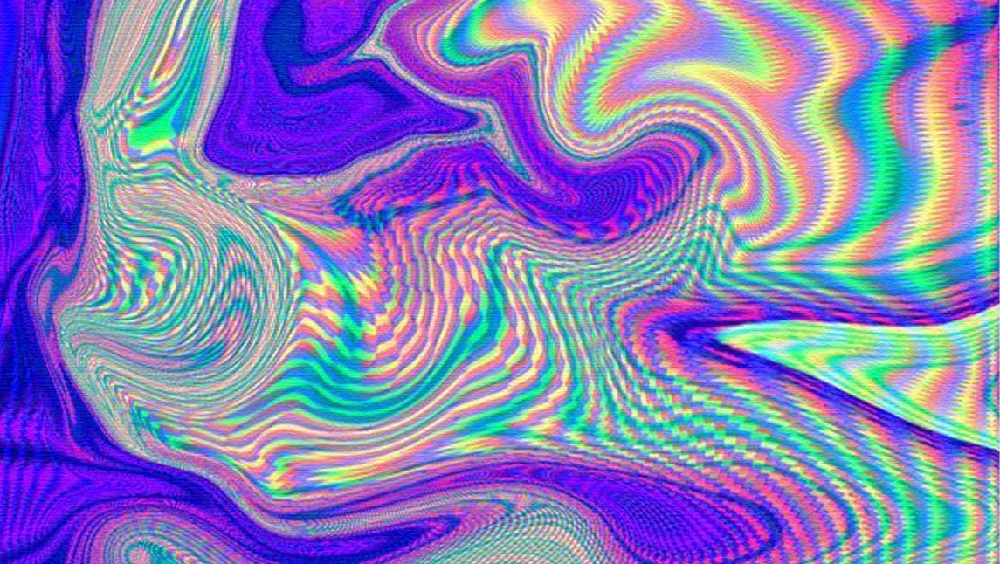

Un holograma es una imagen tridimensional en la cual cada una de sus partes contiene información acerca de la totalidad. El físico teórico Nassim Haramein propuso un modelo de REALIDAD FRACTAL HOLOGRÁFICA; es decir, una realidad que se anida y se copia a sí misma siguiendo la lógica de autosimilitud de los fractales, pero además incluye la variable holográfica: cada punto de la red del Espacio contiene la información de todo el Espacio. Naturalmente, esto es contraintuitivo para una estructura mental acotada.
Ahora bien, si cada punto del Espacio contiene la información total del resto de los puntos, debe existir una estructura capaz de contener tamaña cantidad de información. La mecánica cuántica ha bautizado a esta estructura con el término "Lattice": una estructura geométrica–energética extremadamente compactada y densa.
Para el sentido común y el análisis superficial, el Espacio aparece como vacío y carente de estructura fundamental. Sin embargo, esta carencia es solo aparente y está relacionada con la incapacidad cerebral para decodificar una organización geométrica–energética que sobrepasa la propia complejidad neuronal.
Más allá de lo asombroso de este modelo de realidad, hay muchos aspectos prácticos en juego. Por ejemplo, la medicina china (en contraposición con la medicina alopática), es un sistema holográfico. Todos los órganos del cuerpo se hallan representados en diferentes “zonas reflejas”, como las palmas de las manos o las plantas de los pies.
El Kybalion y su perspectiva esotérica no se queda atrás. Si bien es cierto que cada parte está en la totalidad, también es cierto que la totalidad está en cada parte, que es lo mismo que decir que Dios (la totalidad) creó al humano (la parte) a su imagen y semejanza.
¿Cómo se movería el eje del conocimiento desde esta perspectiva?